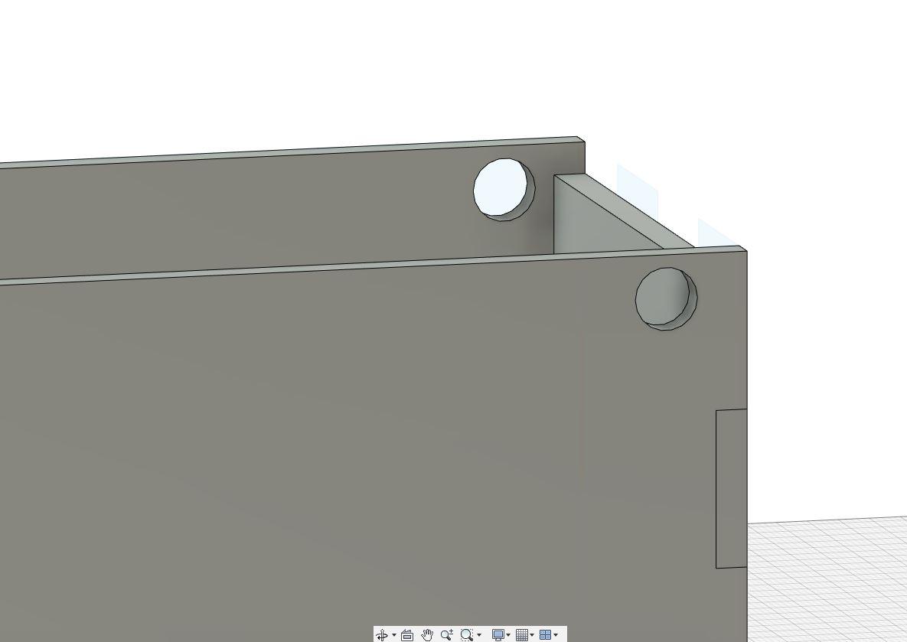

03 August 2020
To start it off I need to create a box which I'm going to laser cut out. I start by measuring the length of the arduino board and a half breadboard. Once I got those measurements, I can begin to build my box.

With the Box being at 105mm in height, 205mm in length and 105mm in depth. Each Teeth is separated at 25mm.
I followed by cutting holes through the box for the movable lid.
After that it was time to make the holder for the servo motor and the arm that would flip off the switch.

Just to hold the servoe motor and preventing it to move about, the holder is designed to let the motor be laid down on its side and be hard to move. It is 22mm in length, 19mm in height and 26.5mm in depth.
The arm Length is 40mm while the width is 45mm to ensure that the arm reaches the switch. The thickness of the arm is at 10mm.

Now I've create a cover for the half where the toggle switch and motor will sit.
And lastly for the box, I created a flap for it where the arm will push up.